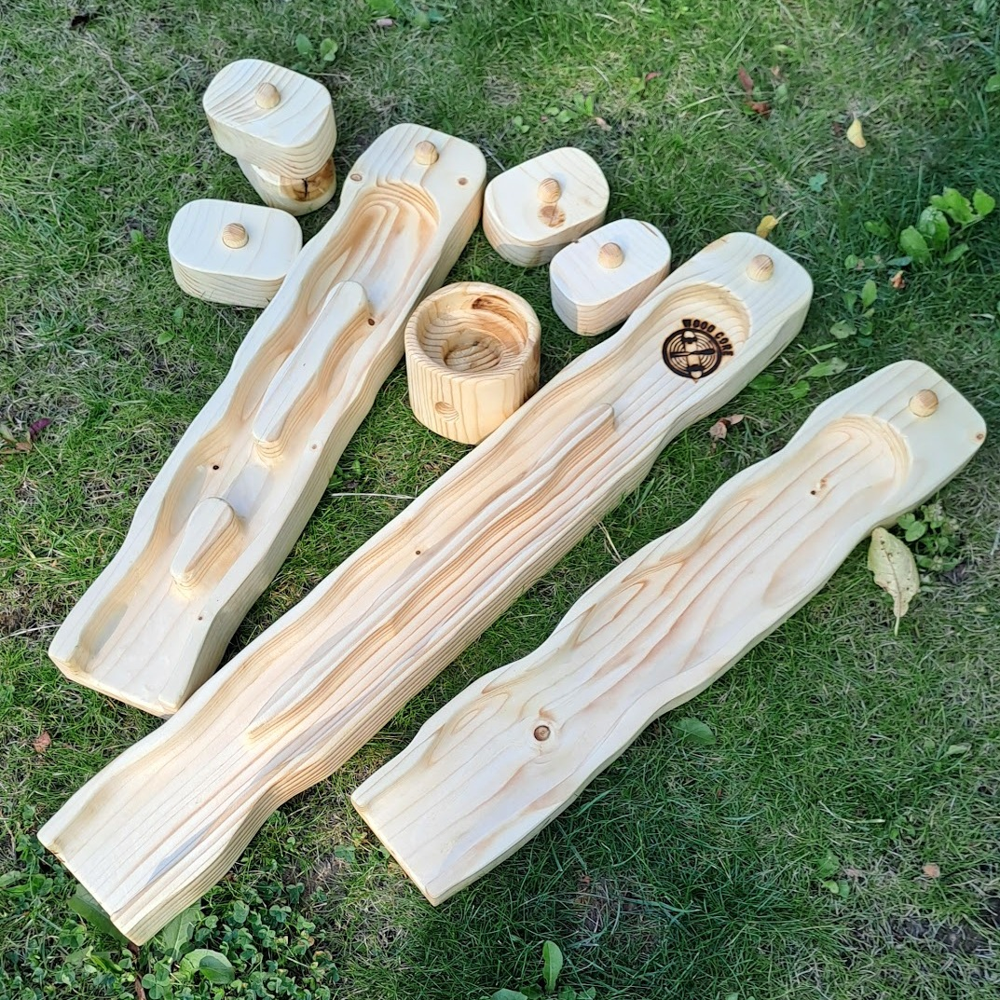
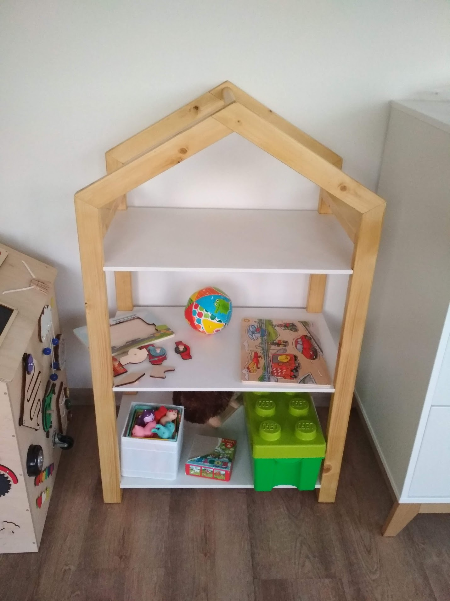
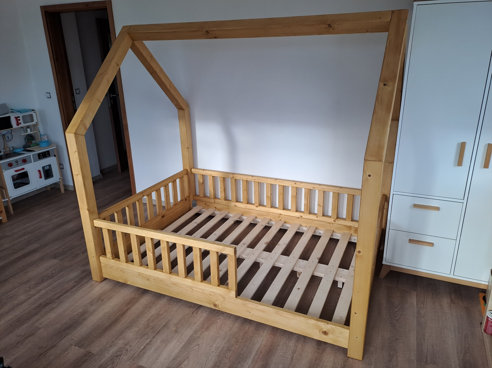
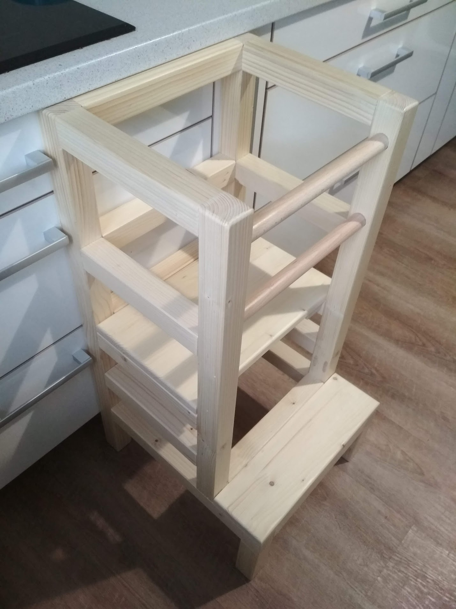
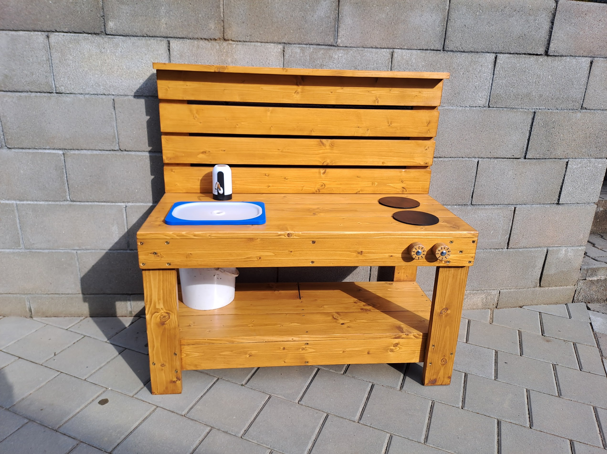
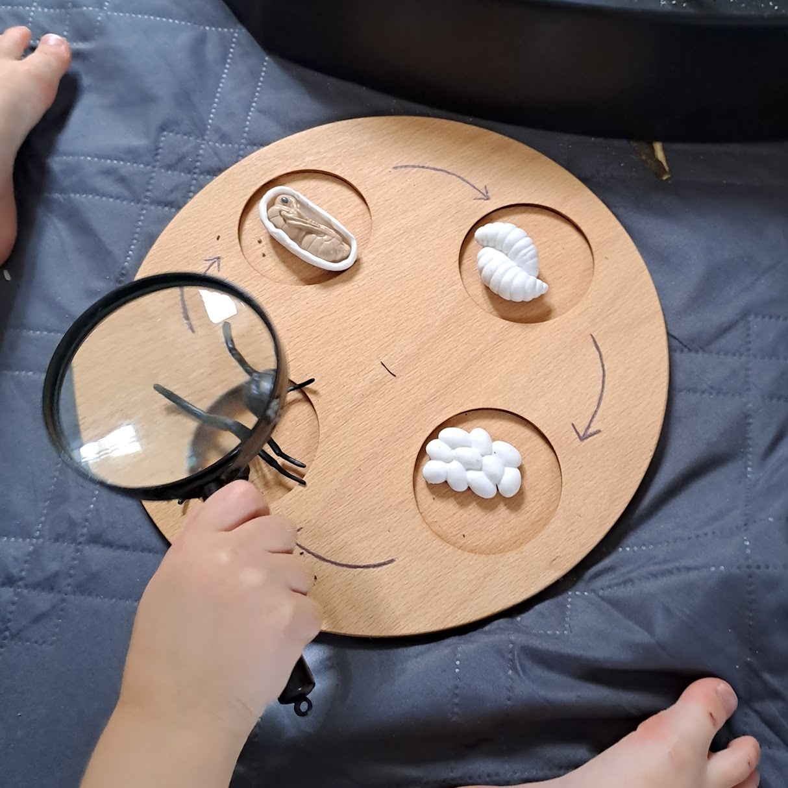

Příběh a zrození
WOOD CORE
Jmenuji se Jakub Poliak a už od malička mě lákala práce se dřevem. Moje cesta sice původně vedla přes IT a strojařinu, ale kutění po večerech pro mou ženu a děti mě nakonec vrátilo zpět ke dřevu. Zjistil jsem, že vytvořit něco vlastníma rukama je zkrátka vášeň. Po desítkách hodin strávených v dílně a hromadě pilin tak konečně pouštím do světa svůj nový projekt – WOOD CORE! Rozhodl jsem se spojit lásku k poctivému řemeslu a dřevu, a pod touto značkou vyrábět nejen designový nábytek, ale také pomůcky pro smyslové hraní (sensory play) a Montessori aktivity pro děti.
Tvořím bezpečné Montessori a sensory play pomůcky z přírodních materiálů ve spolupráci se Senzorií. Žádný plast, ale poctivé dřevo, které přežije i to nejdivočejší dětské testování.
Láska ke dřevu potkává energii tvrdé muziky. Kromě pomůcek pro děti mám v plánu promítnout skate a underground tematiku i do nábytku.






Ceník výrobků a další informace budu postupně doplňovat na Facebook a Instagram, takže mě neváhejte sledovat pro nejnovější aktualizace a novinky.